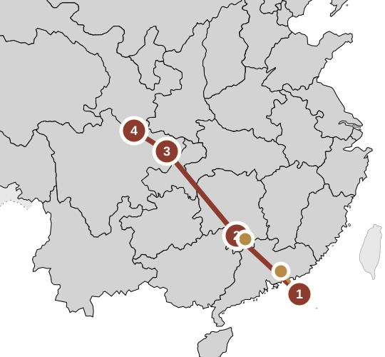

2026年11月8日至21日
华南
到四川
以高铁为主，从深圳出发，经桂林、重庆前往成都，途中安排广州和兴坪一日游。

1深圳4晚
↗广州购物一日游
2桂林3晚
↗兴坪汉服一日游
3重庆2晚
4成都4晚
地图：中国省界轮廓 · 维基共享资源。路线标记为大致位置。
路线
广州和兴坪均为一日往返，丰富行程，也无需额外换酒店。
深圳 · 4晚→桂林 · 3晚→重庆 · 2晚→成都 · 4晚
每日行程
打开任意一天，查看交通安排、上午／下午／晚上的行程和备注。
11月
8
✦
抵达深圳
抵达＋轻松夜晚落地、安顿好，飞行后的第一个晚上刻意安排得轻松一些。
11月
9
◈
深圳购物日
购物在华强北逛电子产品，专程去 BitCity 次元小镇逛动漫周边，再到东门／NWH Dimension 9。
11月
10
◎
深圳设计、海滨与书店
观光探访你在 Instagram 短视频中看到的当代艺术与城市规划馆和钟书阁，再逛深圳湾与南头古城。
11月
11
◇
广州购物美食一日游
购物一日游专门安排一天在广州购物、品尝美食，晚上返回深圳的同一家酒店。
11月
12
→
深圳 → 桂林
转场＋轻松探索乘高铁前往内陆，入住桂林，晚上轻松欣赏风景。
11月
13
✺
兴坪古镇与汉服一日游
传统风情传统古镇体验日：古巷、漓江风景、汉服造型与日落摄影。
11月
14
≈
桂林慢游日
休整＋风景在兴坪一日游和前往重庆的较长高铁行程之间，安排轻松的一天。
11月
15
⇢
桂林 → 重庆与城市夜景
转场＋城市夜景乘直达列车北上，第一晚留给夜幕下最有氛围的重庆。
11月
16
△
重庆全天游
城市探索用一整天探索立体街巷、特色交通、跨江体验与火锅。
11月
17
→
重庆 → 成都
短途高铁转场乘短途高铁抵达成都，时间充裕，可以轻松度过第一个下午。
11月
18
●
大熊猫与文殊院
经典成都一早看熊猫，之后前往成都市中心，感受更宁静的传统氛围。
11月
19
☷
茶、巷子与川剧
文化＋美食放慢节奏，体验茶馆生活、历史街巷和变脸表演。
11月
20
♨
水疗／汤泉日
放松最后一个完整的旅行日，体验成都擅长的慢生活：美食、休养和令人难忘的水疗。
11月
21
✈
飞回温哥华
返程预留充足的机场缓冲时间，上午从简安排。
住宿城市
换酒店次数控制在你设定的四次以内。
11月8日至11日深圳4晚 · 推荐福田
11月12日至14日桂林3晚 · 市中心／湖区
11月15日至16日重庆2晚 · 解放碑周边
11月17日至20日成都4晚 · 太古里／春熙路
主要交通
选择实用、快捷的路线，中国境内不坐飞机。
| 路段 | 方式 | 通常耗时 | 用途 |
|---|---|---|---|
| 深圳 ↔ 广州 | 高铁 | 单程约30–45分钟 | 购物一日游 |
| 深圳 → 桂林 | 高铁 | 约2小时40分至3小时15分 | 第1次换酒店 |
| 桂林 ↔ 兴坪 | 高铁＋出租车 | 单程约1小时 | 汉服／古镇体验日 |
| 桂林 → 重庆 | 高铁 | 约4–5小时 | 第2次换酒店 |
| 重庆 → 成都 | 高铁 | 约1–1.5小时 | 第3次换酒店 |
| 成都 → 温哥华 | 飞机 | 视航班而定 | 国际航班返程 |
预订备注
这里的火车耗时是规划范围，并非已购票的发车时间。请在车票开售后确认2026年11月的具体班次。安排成都机场接送前，请核实航班使用天府机场（TFU）还是双流机场（CTU）。